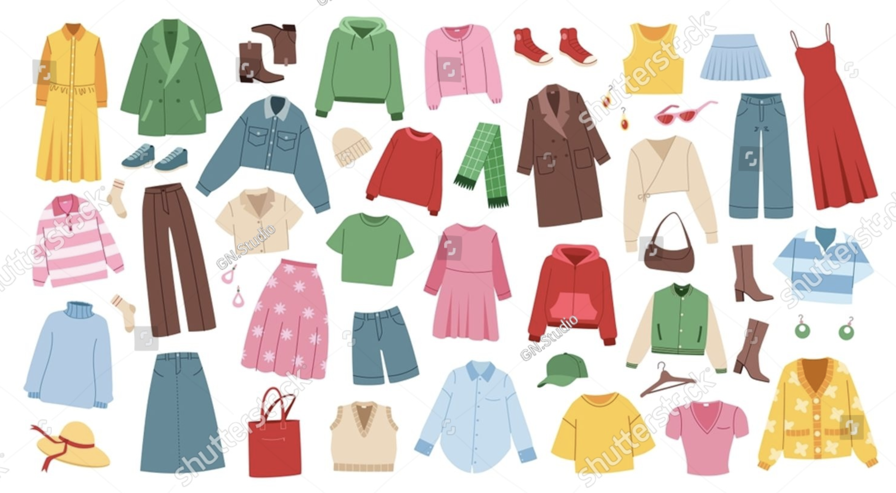

서비스 소개
오늘의 옷 고민을 더 간단하게
오늘 뭐 입지는 매일 어떤 옷을 입을지 고민하는 사용자를 위해 날씨와 상황을 고려한 옷차림을 추천하는 서비스입니다.
오늘의 상황을 입력하고 나에게 맞는 코디를 간편하게 확인해 보세요.

주요 기능
-
날씨별 코디 추천
기온과 날씨에 어울리는 옷차림을 추천합니다.
-
상황별 코디 추천
출근, 데이트, 학교, 여행 등 상황에 맞는 코디를 확인합니다.
-
간편한 코디 선택
복잡한 검색 없이 원하는 조건에 맞는 옷차림을 쉽게 선택합니다.
코디 추천 정보
날씨별 코디 추천
기온과 날씨에 어울리는 옷차림을 추천합니다.
상황별 코디 추천
출근, 데이트, 학교, 여행 등 상황에 맞는 코디를 확인합니다.
간편한 코디 선택
복잡한 검색 없이 원하는 조건에 맞는 옷차림을 쉽게 선택합니다.
이용 방법
- 코디 추천받기 버튼을 눌러 상황과 이메일을 입력합니다.
- 오늘의 날씨와 원하는 스타일을 선택합니다.
- 신청 내용을 확인하고 코디 추천 신청을 완료합니다.
코디 추천 받기
오늘의 상황과 날씨, 스타일을 선택해 나에게 맞는 코디 추천을 신청해 보세요.
1 / 3 · 정보 입력
1. 오늘의 정보 입력
2. 코디 조건 선택
오늘의 날씨에 맞는 옷차림을 선택해 보세요.
3. 신청 내용 확인
입력한 내용을 확인한 뒤 신청을 완료해 주세요.
- 오늘의 상황
- 이메일
- 날씨
- 선호 스타일
코디 추천 신청이 완료되었습니다.
신청하신 상황과 날씨, 스타일 정보가 확인되었습니다.
현재는 신청 완료 화면을 확인하는 실습이며, 실제 이메일 발송은 진행되지 않습니다.
코디 추천 알림 설정
오늘의 날씨와 상황에 맞는 코디 추천 알림을 설정해 보세요.
코디 추천 알림을 설정해 주세요.
서비스 이용 설정
화면 테마 설정
원하는 화면 테마를 선택해 보세요.
0 / 10
안내 확인 후 서비스를 시작할 수 있습니다.